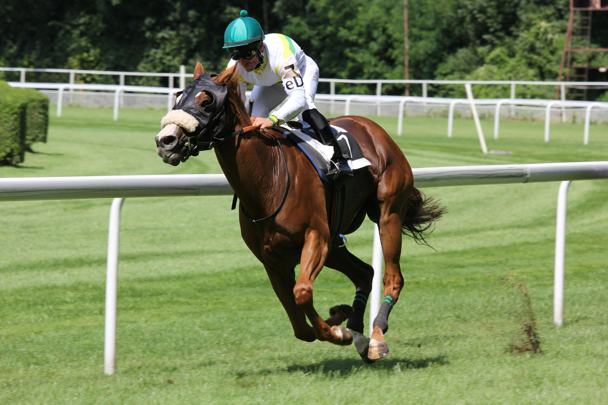

¡Bienvenido a Caballos México!
Descubre el fascinante mundo de los caballos en México. Aquí encontrarás las últimas noticias, información sobre las razas más destacadas, y los eventos ecuestres más emocionantes del país.
Explora lo más destacado de nuestra página:
Emocionantes Carreras de Caballos
Disfruta de las mejores competencias ecuestres en México.
Razas de Caballos Mexicanos
Descubre las razas de caballos más destacadas en México.

Principales Criadores de Caballos en México
Conoce a los criadores de caballos más prestigiosos del país.
Razas de Caballos en México
Descubre algunas de las razas de caballos más emblemáticas de México:
Caballo Azteca
Origen: Estado de México, años 1970.
Descripción: El Caballo Azteca es una raza creada mediante el cruce de caballos Andaluces, Cuarto de Milla y Criollos mexicanos. Su objetivo es combinar versatilidad y elegancia, lo que lo hace ideal tanto para el trabajo como para competencias ecuestres.
Cuarto de Milla
Origen: Estados Unidos, muy popular en México.
Descripción: El Cuarto de Milla es muy apreciado en los rodeos y competiciones de velocidad debido a su gran capacidad de aceleración. Es un caballo fuerte y ágil, ideal para trabajos que requieren rapidez y maniobrabilidad.

Pura Raza Española
Origen: España, con presencia significativa en México.
Descripción: Conocido por su belleza y habilidades en doma clásica, el Pura Raza Española es un caballo elegante y noble. Su porte majestuoso y su destreza lo hacen destacar en disciplinas ecuestres de alta escuela.
Criollo Mexicano
Origen: México.
Descripción: El Criollo Mexicano es un caballo extremadamente resistente, adaptado a las duras condiciones del terreno mexicano. Es una raza versátil, utilizada tanto para trabajo como para deporte.
Appaloosa
Origen: Estados Unidos, con gran presencia en México.
Descripción: Reconocible por sus patrones de pelaje únicos, el Appaloosa es un caballo versátil y atractivo. Es utilizado en diversas disciplinas ecuestres y apreciado por su apariencia distintiva y temperamento dócil.
Criadores de Caballos en México
Rancho Santa María
Ubicación: Estado de México
Especialidad: Criador de Caballos Aztecas reconocido por su excelencia en la crianza y entrenamiento de caballos versátiles y competitivos.
Hacienda San Miguel
Ubicación: Jalisco
Especialidad: Criador de Caballos Criollos Mexicanos conocido por su compromiso con la preservación de la raza y la producción de caballos resistentes y adaptados.
Rancho La Esperanza
Ubicación: Nuevo León
Especialidad: Criador de Caballos Cuarto de Milla famoso por sus ejemplares de alta calidad y su participación en competiciones nacionales e internacionales.
Hacienda Santa Rosa
Ubicación: Veracruz
Especialidad: Criador de Caballos Pura Raza Española reconocido por la elegancia y el temperamento de sus caballos, ideales para la doma clásica y alta escuela.
Eventos
Los mejores eventos de caballos
Carreras de caballos

Ferias de caballos

Cuidados y Consejos para Caballos
Cuidados
Los caballos requieren cuidados especiales para mantener su salud y bienestar:
- Alimentación adecuada y balanceada según sus necesidades nutricionales.
- Control veterinario regular para chequeos de salud, vacunaciones y desparasitaciones.
- Ejercicio y actividad física adecuada para mantener su forma y evitar problemas de salud.
- Cuidado de la piel, cascos y pelo para prevenir lesiones y enfermedades.
Santuarios para Caballos
Existen santuarios dedicados al cuidado y rehabilitación de caballos maltratados o en situación de abandono. Estos lugares ofrecen refugio, atención veterinaria y amor para estos majestuosos animales.
Santuario Equino La Paz
Ubicación: Estado de México
Descripción: Conocido por su dedicación al rescate, rehabilitación y adopción de caballos maltratados y abandonados. Ofrece atención veterinaria integral y un ambiente amoroso para la recuperación de los caballos.
Santuario Equino Xochimilco
Ubicación: Ciudad de México
Descripción: Este santuario se dedica al rescate y cuidado de caballos en situación de maltrato y abandono. Ofrece terapias de rehabilitación y busca encontrar hogares amorosos para los caballos recuperados.
Santuario de Rescate Equino Tulum
Ubicación: Quintana Roo
Descripción: Dedicado al rescate y rehabilitación de caballos en condiciones de maltrato y abandono en la región de Tulum. Promueve la adopción responsable y ofrece programas educativos sobre el cuidado equino.
Consejos
Algunos consejos para mantener a tu caballo feliz y saludable:
- Proporciona un entorno seguro y confortable, con acceso a agua fresca y refugio adecuado.
- Establece una rutina de cuidados regular, incluyendo alimentación, ejercicio y limpieza.
- Educa a tu caballo con métodos de entrenamiento respetuosos y positivos.
- Observa su comportamiento y estado de salud regularmente para detectar cualquier problema a tiempo.